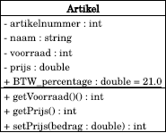

Volgende: Associaties Omhoog: Code Gorilla Klassendiagrammen Vorige: Inleiding Inhoudsopgave

Figuur 1. Voorbeeld van een klassediagram.
We bekijken eerst de notatie voor een klasse. In figuur 1 zien we dat het klassendiagram bestaat uit drie delen:
Op ontwerpniveau wordt soms geen java-typen (zoals int, string etc.) gebruikt om de typen weer te geven. Men kan ook duidingen zoals 'Geheel getal' of 'Bedrag' en dergelijke gebruiken.
Voor attributen hanteerd UML de volgende syntax:
![\begin{minted}{java}
[toegang] naam[: type] [= waarde]
\end{minted}](img1.svg)
Toegang geeft aan of het attribuut behoort tot:
Naam en Type geven de naam en het type van het attribuut weer.
De volledige syntaxis voor methodeduidingen is:
![\begin{minted}{c}
[toegang] naam([parameterlijst]) [: resultaattype]
\end{minted}](img4.svg)
Voorbeeld:
Een methode voor de klasse order die gebruikt kan worden om de BTW uit te rekenen is dan als volgt:
Attributen en/of methoden kunnen worden weggelaten uit het diagram.